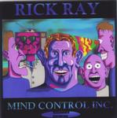

| Artist: | Rick Ray |
| Title: | Mind Control Inc. |
| Label: | Neurosis Records |
| Length(s): | 72 minutes |
| Year(s) of release: | 2000 |
| Month of review: | 09/2000 |
| 1) | Psychoward Room #9 | 4.28 |
| 2) | Robot Assassins | 7.07 |
| 3) | Little Zombies | 6.18 |
| 4) | Mood Swings And Luney Things | 4.47 |
| 5) | Hypnotic Neurotic | 6.35 |
| 6) | Mind Control | 5.01 |
| 7) | Napoleon Brainapart | 4.34 |
| 8) | This Is The Place | 7.01 |
| 9) | Attack Of The Mindles | 3.51 |
| 10) | Prescription Of Ignorance | 5.36 |
| 11) | Looking All The Time | 5.47 |
| 12) | The Delusion | 6.35 |
| 13) | The Stranger | 4.10 |